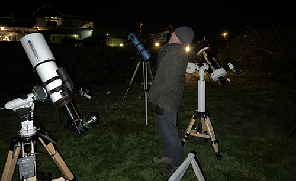
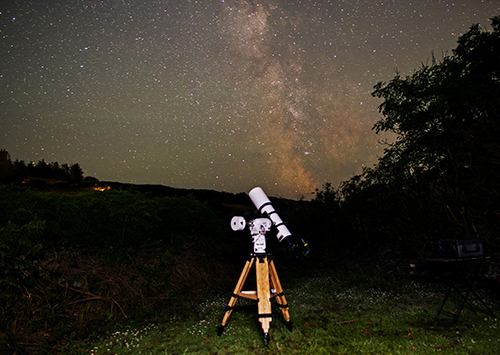

WELCOME TO BALTIMORE ASTRONOMERS.
next gathering:
8pm THURSDAY 27th FEBRUARY 2025
CASEY'S of BALTIMORE
Bring your scope if the weather looks promising, Casey's has a lawn behind. If there's nobody in the bar, or if you're late, look over the hedge at the back
of the car park to see if we're there. We have lately started trying to kick off with a short talk/presentation around 8pm, then discussion, then observe.

ABOUT US
Baltimore Astronomy Society (Ireland, not USA!) began in early 2023 and exists to provide a focal point and place to meet for local people to share
or express an interest in astronomy and feast on the exquisite night skies we have down here in West Cork.
Whether you're an experienced stargazer, a beginner looking for advice, have no experience but want to find out how to get started, or are
an astrophotographer, come along to Casey's of Baltimore any "final Thursday", or get in touch via the contact detail at the bottom of the
page.
The regular meet-ups are from around 8pm followed by observing in their lawn behind, weather permitting. There's plenty of parking
and the lawn is perfect for astronomy mounts.

the quality of our night sky, taken from Ballylynchy, July 2023
RECENT & UPCOMING EVENTS
-> meteor showers: Lyrids 21-22 Apr 2024; Perseids 11-12 Aug 2024; Orionids 20-21 Oct 2024; Taurids 4-12 Nov 2024; Leonids 17-18 Nov 2024;
Geminids 13-14 Dec 2024; Ursids 21-22 Dec 2024; Quadrantids 3-4 Jan 2025.
|